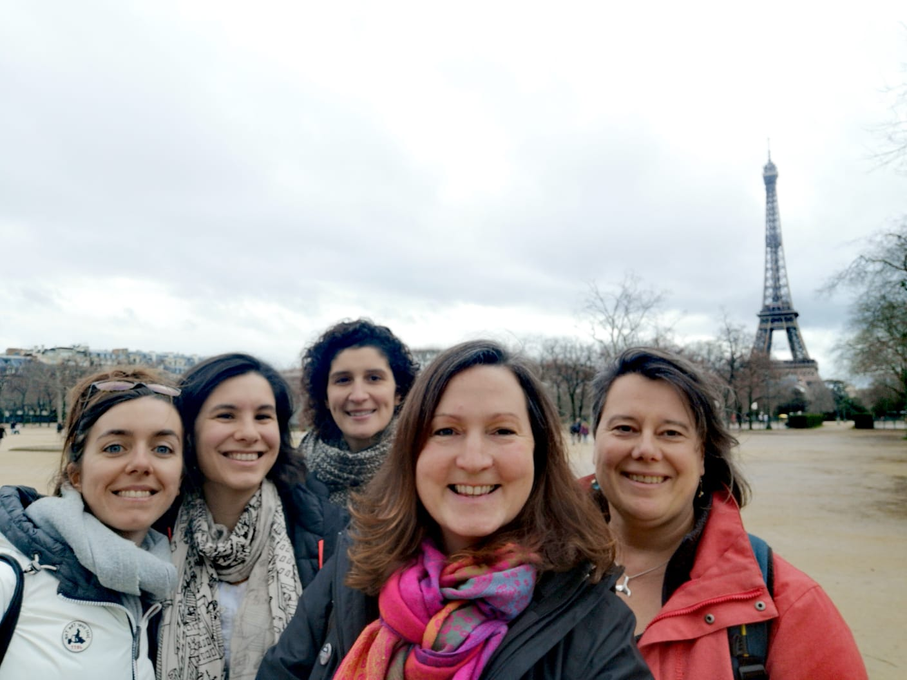
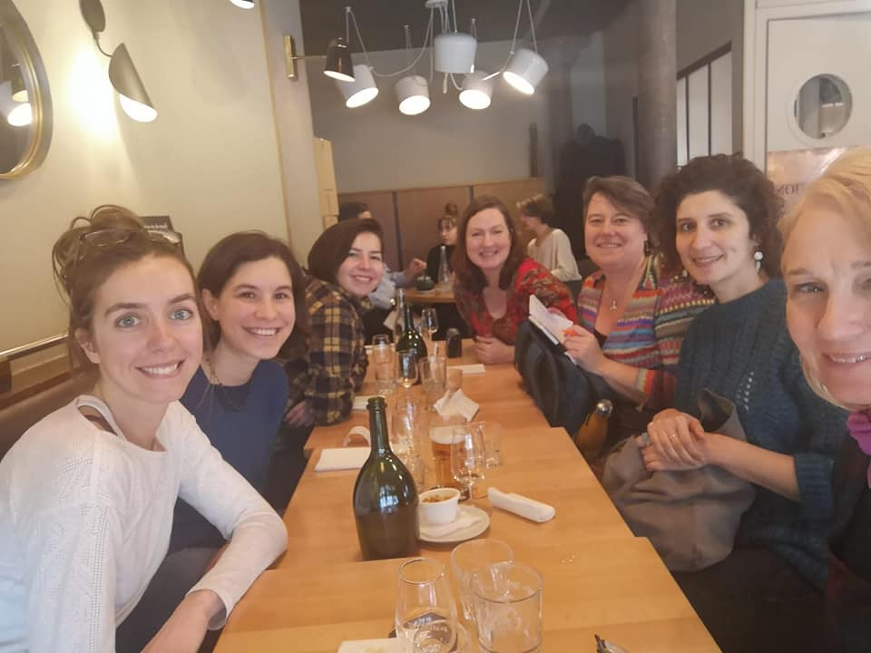

A couple of weeks ago, over the first weekend of February I had my first meeting in person with other participants of HB5 here in Paris. Who are they?
- Rebecca Wade (Scottish): Senior Lecturer in Environmental Science
- Louise Kelly-Hope (Australian–British): Head of Monitoring and Evaluation Operational Research - Centre for Neglected Tropical Diseases
- Anna Colucci (Italian living in Germany): Senior Business Process Assistant - Environmental Management Specialist
- Charlotte Francesiaz (French): researcher in ecology and an expert for the French Ministry of the Environment in the French Office of Biodiversity
- Amie Figueiredo (Portuguese-American living in Switzerland): Associate Economic Affairs Officer United Nations
- Sigrid Maebe (Belgian): Science communicator (marine biology and agriculture)
We were also joined via videoconference by Emeline Pettex from HB4 and Alexandra Dubini from HB2 who shared their knowledge on what’s ahead of us. We visited the city but also we worked hard over a long meeting, discussing our HB plans, funding schemes, ambitions and dreams, but also gender bias and science. So many positive things came out of this meeting, but first and foremost, the feeling that we are now a united group, and are here for each other. Next time we all meet will be in Argentina to embark towards Antarctica.
Il y a quelques semaines, au cours du premier week-end de février, j'ai eu ma première rencontre en personne avec d'autres participants de HB5 ici à Paris. Rebecca Wade (Écossaise), Louise Kelly-Hope (Australienne – Britannique), Anna Colucci (Italienne vivant en Allemagne), Charlotte Francesiaz (Française), Amie Figueiredo (Portugaise-Americanne vivant en Suisse) and Sigrid Maebe (Belgian). Emeline Pettex de HB4 et Alexandra Dubini de HB2 se sont connectées par videconference pour partager leur expérience ayant déjà complété le programme. Nous avons visité la ville mais nous avons aussi discuter du programme HB: nos plans de financement, de nos ambitions et de nos rêves, mais aussi les femmes en science et la ccience elle-même. Tant de choses positives sont sorties de cette réunion, mais avant tout, je retiens le sentiment que nous sommes maintenant un groupe uni et que nous sommes ici les unes pour les autres. La prochaine réunion sera en Argentine pour embarquer vers l'Antarctique.
